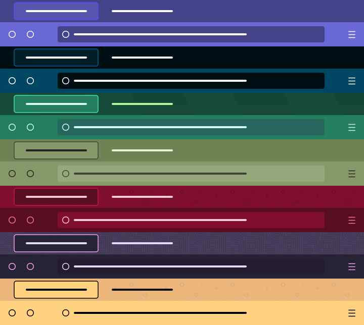

doku.js
A Simple Text and Document Viewer written in pure/vanilla JavaScript that comes with special documentation syntax.
Border colors, centering content, frame positioning, sliding texts, search and commands...
Doky
Doky is the name of custom documentation syntax. It supports tables, code blocks, commands.

There is a Visual Studio Code extension for syntax highlighting.
bm
A Simple Bookmark Manager for Your Shell.
Creates ~/.bm directory to store store.toml file which contains your bookmarks in toml format.
Commands
add, show, delete, help, pretty print and all cool stuff expected from a bookmark manager.
Supports both *nix and Windows operating systems.
Clipboard Concat
Concatenates selected text or link to your clipboard.
Allows you to copy links and selections and then concatenates into your clipboard. Concat options: New Line, Comma, Semicolon, Space. You can also clear clipboard.
Images
Icon
Screenshot

Open Tab with Respect
Allows you to open link as new tab in given 4 tab position.
Open tab as: First Tab, Last Tab, Next Tab, Previous Tab
Images
Icon
Screenshot

Firefox Themes
